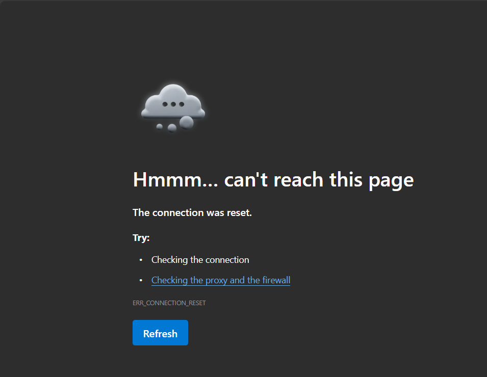

Solve The Apache!
Pada latihan ini anda tidak akan diberikan panduan khusus, jadi selesaikan masalah yang ada pada Apache.
Silahkan download terlebih dahulu Lembar Kerja Peserta Didik (LKPD) pada link di bawah ini!
Bantu Daniel menampilkan hasil website yang sudah ada di Apache!
Sebelum anda memulai lab, silahkan buka terminal pada perangkat masing-masing dan anda dapat meminta akses ke guru anda. Akses akan berupa ssh -p [port] user@ipaddress
Pertama masuk ke dalam mode root
user@server:~$ sudo su
[sudo] password for user:
Jika sudah, anda bisa memulai lab dengan mengetikan perintah
lab start solveApache
Halo! Perkenalkan saya Daniel yang merupakan seorang system administrator di sebuah perusahaan di negara Konoha. Saya memiliki permasalahan ketika melakukan konfigurasi Apache pada server yang saya miliki. Perusahaan meminta saya untuk membuat sebuah website namun ternyata website tersebut mengalami error. Tampilan website tersebut menjadi seperti di bawah ini.
Dan ketika saya cek pada server dengan command curl, menampilkan hasil seperti ini
Bantu saya untuk menyelesaikan masalah ini🙌
Jika konfigurasi sudah selesai dilakukan, silahkan cek hasil pengerjaan dengan perintah di bawah ini. Jika dirasa belum cukup, anda dapat melanjutkan pengerjaan sampai hasilnya sudah benar
root@server:~# lab grade solveApache
Lakukan perintah berikut untuk menyelesaikan proses praktikum. Gunakan user root untuk melakukan perintah.
root@server:~# lab finish solveApache
Jika sudah menyelesaikan, silahkan upload LKPD pada link berikut!
Pada latihan ini anda akan mengonfigurasi Web Server Apache!
Membuat Apache sukses menampilkan website secara lokal
Sebelum anda memulai lab, silahkan buka terminal pada perangkat masing-masing dan anda dapat meminta akses ke guru anda. Akses akan berupa ssh -p [port] user@ipaddress
Pertama masuk ke dalam mode root
user@server:~$ sudo su
[sudo] password for user:
Jika sudah, anda bisa memulai lab dengan mengetikan perintah
lab start apache
1. Install paket Apache
root@server:~# apt-get install apache2 -y
2. Hidupkan paket apache yang sudah terinstall. (Pada dasarnya apache langsung aktif ketika diinstall)
root@server:~# systemctl enable apache2
3. Buat direktori baru dalam /var/www/html untuk menyimpan file html custom.
root@server:~# mkdir /var/www/html/web-me
4. Buat file html baru di dalam direktori yang sudah dibuat yakni /var/www/html/web-me/.
root@server:~# touch /var/www/html/web-me/index.html
5. Isi file tersebut dengan
root@server:~# echo "<h1>Selamat datang di website</h1>" > /var/www/html/web-me/index.html
6. Selanjutnya, buat custom tampilan error jika page pada sebuah website tidak ditemukan.
root@server:~# touch /var/www/html/web-me/error.html
7. Isi file custom error tersebut dengan
root@server:~# echo "<h1>Ooops, page not found</h1>" > /var/www/html/web-me/error.html
8. Pindah ke dalam direktori konfigurasi apache yang didalamnya terdapat file virtualhost
root@server:~# cd /etc/apache2/sites-available
9. Buat file virtualhost baru pada direktori tersebut yang diberi nama web-me.conf. Masuk ke dalam file tersebut dengan perintah nano web-me.conf
<VirtualHost *:80>
ServerName webme.com
ServerAdmin sija@localhost
DocumentRoot /var/www/html/web-me
<Directory /var/www/html/web-me>
Options Indexes FollowSymLinks
Require all granted
AllowOverride None
ErrorDocument 404 /error.html
</Directory>
ErrorLog ${APACHE_LOG_DIR}/error.log
CustomLog ${APACHE_LOG_DIR}/access.log combined
</VirtualHost>
10. Kita bisa menghidupkan hasil dari file virtualhost yang sudah kita buat dengan perintah
root@server:~# a2ensite web-me.conf
11. Matikan file virtualhost default yang ada pada direktori sites-enabled
root@server:~# a2dissite 000-default.conf
12. Restart paket apache
root@server:~# systemctl restart apache2
Jika konfigurasi sudah selesai dilakukan, silahkan cek hasil pengerjaan dengan perintah di bawah ini. Jika dirasa belum cukup, anda dapat melanjutkan pengerjaan sampai hasilnya sudah benar
root@server:~# lab grade apache
Lakukan perintah berikut untuk menyelesaikan proses praktikum. Gunakan user root untuk melakukan perintah.
root@server:~# lab finish apache